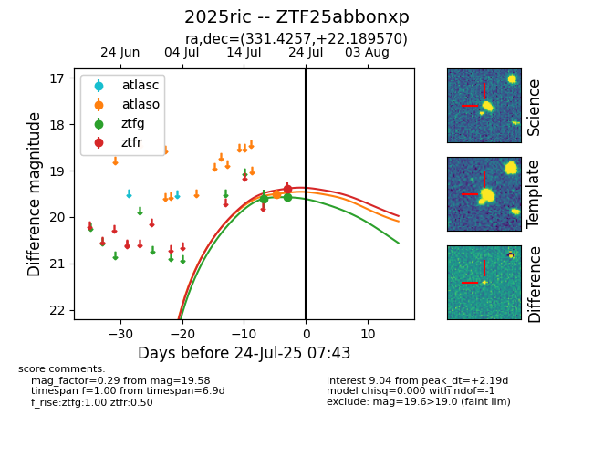

Target ZTF25abbonxp at 2025-07-24 07:43, see:
FINK: fink-portal.org/ZTF25abbonxp
Lasair: lasair-ztf.lsst.ac.uk/objects/ZTF25abbonxp
ALeRCE: alerce.online/object/ZTF25abbonxp
TNS: wis-tns.org/object/2025ric
YSE: ziggy.ucolick.org/yse/transient_detail/2025ric
alt names
ZTF25abbonxp (ztf,fink)
2025ric (tns,yse)
coordinates:
equatorial (ra, dec) = (331.4257,+22.18957)
galactic (l, b) = (79.7389,-26.46264)
photometry
last atlaso=19.50, ztfg=19.58, ztfr=19.39
1 atlaso, 2 ztfg, 1 ztfr detections
